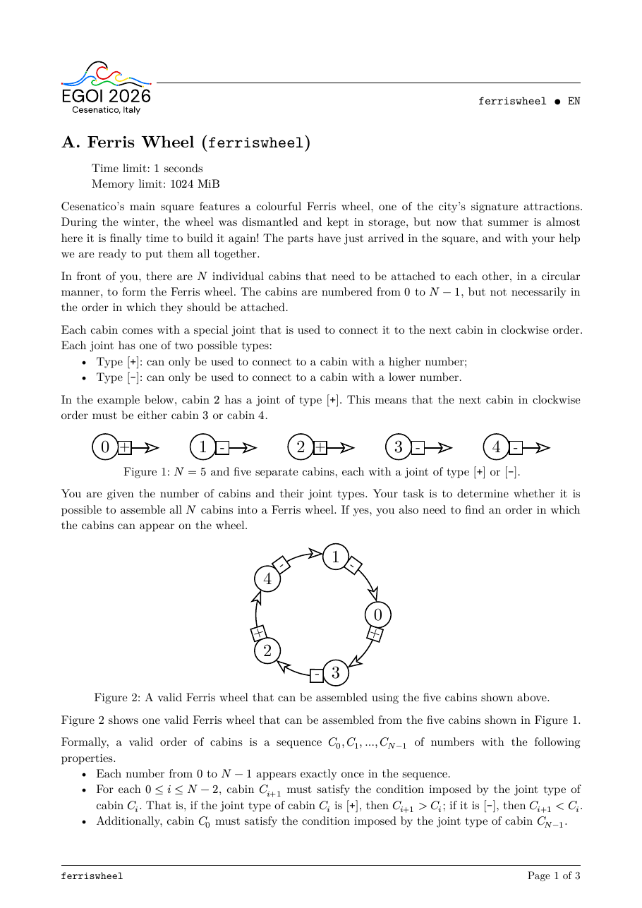
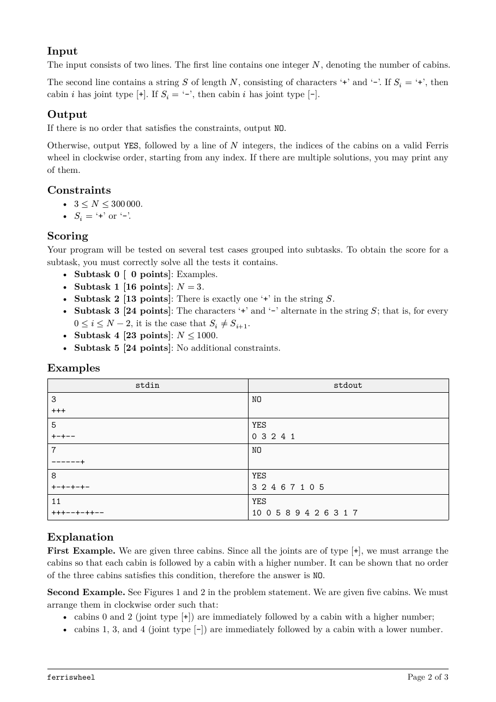
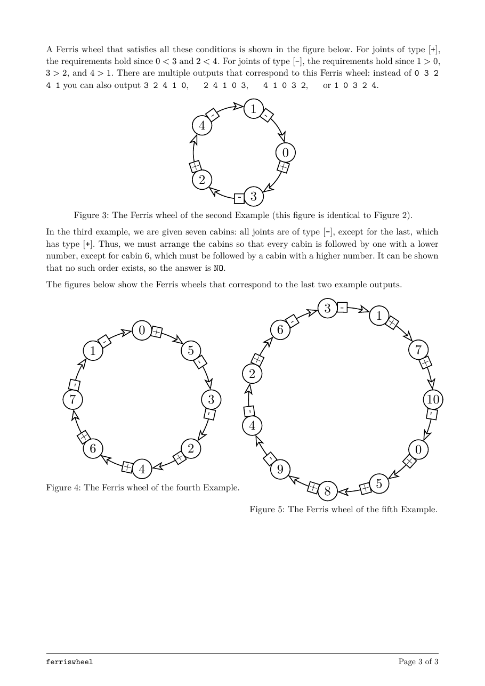

题面
来源：EGOI 2026 官方 PDF。模型收到的是由同一份 Typst 源文件转换的文字。



结果
Kimi K3.1 ProKimi
auto（max）
3/3
解出的采样 ↑
- 100采样 1 · 解出
- 100采样 2 · 解出
- 100采样 3 · 解出
- 5.1k平均输出 token（含思考） ↓
- 28.2输出速度 tokens/s ↑
- 130 秒延迟 ↓
DeepSeek Flash V4.1-1017DeepSeek
auto（high）
3/3
解出的采样 ↑
- 100采样 1 · 解出
- 100采样 2 · 解出
- 100采样 3 · 解出
- 4.3k平均输出 token（含思考） ↓
- 198.2输出速度 tokens/s ↑
- 19 秒延迟 ↓
MiniMax M3.1 FlashMiniMax
auto（max）
3/3
解出的采样 ↑
- 100采样 1 · 解出
- 100采样 2 · 解出
- 100采样 3 · 解出
- 3.5k平均输出 token（含思考） ↓
- 146.0输出速度 tokens/s ↑
- 24 秒延迟 ↓
↑ 越大越好，↓ 越小越好。得分 0–100，按官方时限判定，所有测试点都满分才算解出。CPU 时间 / 官方解为解出的答案在官方解最慢的 3 个测试点上的 CPU 时间之比（几何平均），只比较官方解至少需要 0.05 秒的题；复杂度按增长幂次相对官方解分类。判题与计分见 原理。
代码
Kimi K3.1 Pro · 采样 1 · 35 行
#include <bits/stdc++.h> using namespace std; int main() { ios::sync_with_stdio(false); cin.tie(nullptr); int N; string S; cin >> N >> S; if (S.front() != '+' || S.back() != '-') { cout << "NO\n"; return 0; } cout << "YES\n"; bool first = true; auto print_cabin = [&](int x) { if (!first) cout << ' '; first = false; cout << x; }; for (int i = 0; i < N; ++i) { if (S[i] == '+') print_cabin(i); } for (int i = N - 1; i >= 0; --i) { if (S[i] == '-') print_cabin(i); } cout << '\n'; return 0; }
Kimi K3.1 Pro · 采样 2 · 59 行
#include <bits/stdc++.h> using namespace std; struct Runs { int a, b, c; }; int main() { ios::sync_with_stdio(false); cin.tie(nullptr); int N; string S; cin >> N >> S; if (S.front() != '+' || S.back() != '-') { cout << "NO\n"; return 0; } vector<Runs> runs; vector<int> nxt(N, -1); int pos = 0; while (pos < N) { int a = pos; while (pos < N && S[pos] == '+') ++pos; int b = pos - 1; while (pos < N && S[pos] == '-') ++pos; int c = pos - 1; runs.push_back({a, b, c}); for (int v = a; v < b; ++v) nxt[v] = v + 1; nxt[b] = c; for (int v = c; v > b + 1; --v) nxt[v] = v - 1; nxt[b + 1] = a; } for (int i = 1; i < (int)runs.size(); ++i) { const auto &p = runs[i - 1]; const auto &q = runs[i]; nxt[p.b] = q.a; nxt[q.b + 1] = p.c; } cout << "YES\n"; int cur = 0; for (int i = 0; i < N; ++i) { if (i) cout << ' '; cout << cur; cur = nxt[cur]; } cout << '\n'; return 0; }
Kimi K3.1 Pro · 采样 3 · 39 行
#include <bits/stdc++.h> using namespace std; int main() { ios::sync_with_stdio(false); cin.tie(nullptr); int N; string S; cin >> N >> S; if (S[0] != '+' || S[N - 1] != '-') { cout << "NO\n"; return 0; } vector<int> higher, lower; higher.reserve(N); lower.reserve(N); for (int i = 0; i < N; ++i) { if (S[i] == '+') higher.push_back(i); else lower.push_back(i); } cout << "YES\n"; bool first = true; for (int x : higher) { if (!first) cout << ' '; first = false; cout << x; } for (auto it = lower.rbegin(); it != lower.rend(); ++it) { cout << ' ' << *it; } cout << '\n'; return 0; }
DeepSeek Flash V4.1-1017 · 采样 1 · 38 行
#include <bits/stdc++.h> using namespace std; int main() { ios::sync_with_stdio(false); cin.tie(nullptr); int N; string S; cin >> N >> S; if (S.front() != '+' || S.back() != '-') { cout << "NO\n"; return 0; } cout << "YES\n"; bool first = true; for (int i = 0; i < N; ++i) { if (S[i] == '+') { if (!first) cout << ' '; cout << i; first = false; } } for (int i = N - 1; i >= 0; --i) { if (S[i] == '-') { if (!first) cout << ' '; cout << i; first = false; } } cout << '\n'; return 0; }
DeepSeek Flash V4.1-1017 · 采样 2 · 36 行
#include <bits/stdc++.h> using namespace std; int main() { ios::sync_with_stdio(false); cin.tie(nullptr); int N; string S; cin >> N >> S; if (S.front() != '+' || S.back() != '-') { cout << "NO\n"; return 0; } vector<int> ans; ans.reserve(N); for (int i = 0; i < N; ++i) { if (S[i] == '+') ans.push_back(i); } for (int i = N - 1; i >= 0; --i) { if (S[i] == '-') ans.push_back(i); } cout << "YES\n"; for (int i = 0; i < N; ++i) { if (i) cout << ' '; cout << ans[i]; } cout << '\n'; return 0; }
DeepSeek Flash V4.1-1017 · 采样 3 · 38 行
#include <bits/stdc++.h> using namespace std; int main() { ios::sync_with_stdio(false); cin.tie(nullptr); int N; cin >> N; string S; cin >> S; if (S[0] != '+' || S[N - 1] != '-') { cout << "NO\n"; return 0; } vector<int> answer; answer.reserve(N); for (int i = 0; i < N; ++i) { if (S[i] == '+') answer.push_back(i); } for (int i = N - 1; i >= 0; --i) { if (S[i] == '-') answer.push_back(i); } cout << "YES\n"; for (int i = 0; i < N; ++i) { if (i) cout << ' '; cout << answer[i]; } cout << '\n'; return 0; }
MiniMax M3.1 Flash · 采样 1 · 46 行
#include <bits/stdc++.h> using namespace std; int main() { ios::sync_with_stdio(false); cin.tie(nullptr); int N; string S; cin >> N >> S; if (S[0] != '+' || S[N - 1] != '-') { cout << "NO\n"; return 0; } vector<int> order; order.reserve(N); // Cabins with '+' joints, in increasing order. order.push_back(0); for (int i = 1; i < N - 1; ++i) { if (S[i] == '+') { order.push_back(i); } } // The largest cabin must have a '-' joint. order.push_back(N - 1); // Remaining cabins with '-' joints, in decreasing order. for (int i = N - 2; i >= 1; --i) { if (S[i] == '-') { order.push_back(i); } } cout << "YES\n"; for (int i = 0; i < N; ++i) { if (i) cout << ' '; cout << order[i]; } cout << '\n'; return 0; }
MiniMax M3.1 Flash · 采样 2 · 42 行
#include <bits/stdc++.h> using namespace std; int main() { ios::sync_with_stdio(false); cin.tie(nullptr); int N; string S; cin >> N >> S; if (S[0] == '-' || S[N - 1] == '+') { cout << "NO\n"; return 0; } vector<int> answer; answer.reserve(N); // Increasing order for cabins with a '+' joint. for (int i = 0; i < N; ++i) { if (S[i] == '+') { answer.push_back(i); } } // Decreasing order for cabins with a '-' joint. for (int i = N - 1; i >= 0; --i) { if (S[i] == '-') { answer.push_back(i); } } cout << "YES\n"; for (int i = 0; i < N; ++i) { if (i > 0) cout << ' '; cout << answer[i]; } cout << '\n'; return 0; }
MiniMax M3.1 Flash · 采样 3 · 40 行
#include <bits/stdc++.h> using namespace std; int main() { ios::sync_with_stdio(false); cin.tie(nullptr); int N; string S; cin >> N >> S; // Cabin 0 cannot connect to a lower-numbered cabin. // Cabin N-1 cannot connect to a higher-numbered cabin. if (S.front() != '+' || S.back() != '-') { cout << "NO\n"; return 0; } cout << "YES\n"; bool first = true; auto print = [&](int x) { if (!first) cout << ' '; first = false; cout << x; }; // '+' cabins in increasing order. for (int i = 0; i < N; ++i) { if (S[i] == '+') print(i); } // '-' cabins in decreasing order. for (int i = N - 1; i >= 0; --i) { if (S[i] == '-') print(i); } cout << '\n'; return 0; }